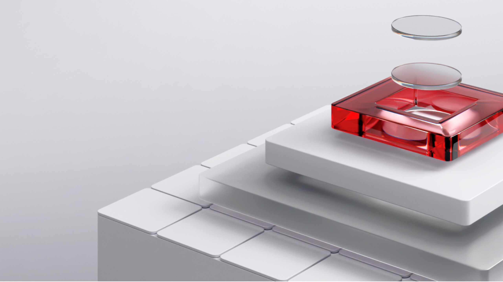
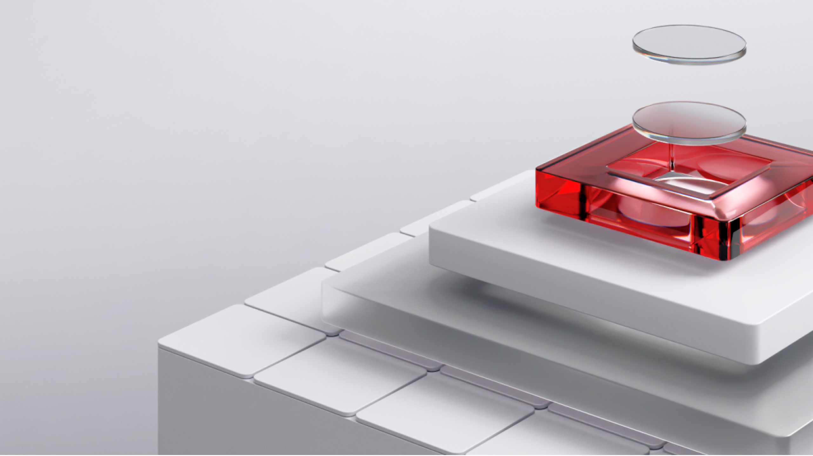

Дизайн-система КриптоАРМ
Проектирование дизайн-системы продукта для desktop и mobile платформ
03/2024
- Дизайн-системы
КриптоАРМ — приложение для электронной подписи и шифрования документов. Приложение работает на десктопе и мобильных устройствах.
За 3 года существования новой версии продукта не было разработано единой дизайн-системы, из-за чего многие интерфейсы имели схожие, но отличающиеся компоненты, цвета и шрифты. Также продукт визуально различался на десктопной и мобильной платформах.
Задачей было создать единую дизайн-систему, которая унифицирует компоненты, оптимизирует разработку макетов и верстку, а также исправит проблемы с доступностью.
Задача
- Унификация Унифицировать и систематизировать компоненты и интерфейсы, чтобы обеспечить консистентность во внешнем виде и во взаимодействии с интерфейсом.
- Улучшение доступности Переработать цветовую палитру, чтобы повысить удобство использования и привести ее в соответствие стандартам доступности.
- Оптимизация разработки и поддержки продукта Ускорить процесс разработки и упростить дальнейшую поддержку интерфейсов за счет стандартизированных компонентов.
- Масштабируемость Создать дизайн-систему, которая может быть адаптирована и масштабирована для использования в других продуктах.
Предварительная работа
- Совещание с разработчиками От разработчиков узнал, что на фронтенде используется библиотека компонентов, основанная на Material Design 3. Поэтому принял решение за основу использовать стандартную библиотеку компонентов MD3 для создания компонентов в Figma.
- Анализ интерфейсов Проанализировал все типовые интерфейсы десктопного и мобильного приложений. Выявил различия и сходства в использовании компонентов. Определил предварительный список требуемых компонентов.
- Лучшие практики Проанализировал дизайн-системы крупнейших IT-компаний для выявления лучших практик при создании дизайн-систем.
Результаты
Библиотека компонентов
Разработал унифицированную библиотеку в Figma для desktop и mobile версий продукта более чем из 50 компонентов. Все компоненты включают в себя различные варианты и свойства для решения необходимых задач при построении интерфейсов.


Дизайн-токены
Стандартизировал цвета, шрифты, тени и скругления с использованием дизайн-токенов. Разработал наборы токенов для светлой и темной тем интерфейса.
{kind=link}

Цветовая палитра
Переработал цветовую палитру продукта. Ограничил цветовую палитру определенным набором цветом для улучшения согласованности и гармоничности. Улучшил контрастность, что обеспечило более высокую доступность интерфейса (по стандарту WCAG 2.1). Палитра была адаптирована для разных режимов (светлый и темный) для лучшего восприятия в разное время суток.

Типографика
Разработал ограниченный набор типографических стилей, чтобы уменьшить разнородность в интерфейсах и повысить читаемость. Для десктопа и мобильной платформы создал отдельные наборы типографических стилей.

 

{kind=link}

Документация
Подготовил документацию по дизайн-системе для упрощения интеграции дизайн-системы с продуктом. Описал контекст использования компонентов, их варианты и свойства, а также дизайн-токены.
{kind=link}

- Арт-дирекшнОксана Карпова
- Проектирование дизайн-системы:Алексей Стяжкин